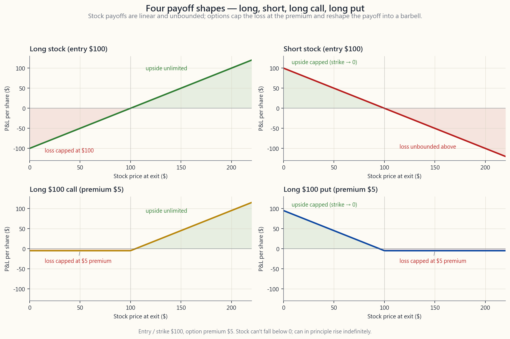
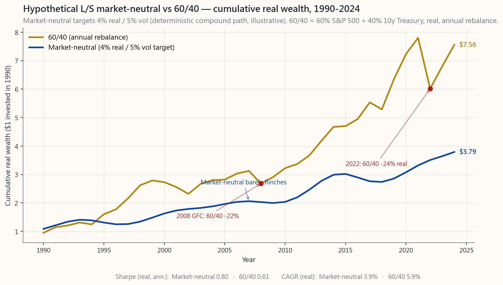

Week 13: Long/Short — Relative Value, Alpha Extraction, and the Dollar-Neutral Book
1. Why This Is Important
Up to this week the course has been about owning things. Long stocks, long bonds, long the index, long whatever store of value you trust. Long-only is the right default for almost every investor, and we have spent twelve weeks defending it.
This week is the first week we add a second leg. Not "buy and hold something else" — but borrow it, sell it, and buy it back later. Shorting. The other half of the market.
You need this for four reasons.
stock, your loss is capped at 100% and your gain is unlimited. Short a stock, your gain is capped at 100% and your loss is unlimited. Most retail blow-ups in shorting come from people who do not internalise that asymmetry and size their shorts the same way they size their longs. The option tail wags the equity dog, and the asymmetric short squeeze is mostly a story about that dynamic. GameStop in January 2021 took a textbook-cheap short from $20 to $480 in three weeks and ended several professional short-only funds.
durable alpha sources are liquidity, sector rotation, long-term trends, and buying what passive has abandoned. None of those are pure long-only trades. Three of the four are spread trades — long the cheap leg, short the expensive leg, hold the relative-value position until convergence. If you only ever go long, you are systematically excluded from the trades where informed money actually earns its return.
have any edge at all.** When your long book and short book sum to zero net dollars and roughly zero net beta, the market direction washes out. What is left is your stock-picking. If your long-short spread compounds positively over a few years, you have alpha. If it does not, you do not — and you have spared yourself the embarrassment of confusing a bull market for skill.
Week 14 takes the same machinery and applies it to a single pair of stocks (pair trading). Week 49 applies it to volatility itself (vol arb). Week 23 (factors) and Week 47 (long-vol overlay) both rest on the long-short architecture you are about to learn. Without this lesson, the rest of the course's relative-value material has no foundation.
This is not a lesson telling you to start shorting tomorrow. Most of you should not. It is a lesson teaching you the toolkit so that when the course later points at a structural mispricing, you will know what you are looking at.
2. What You Need to Know
2.1 The Mechanics of a Short — Borrow, Sell, Buy, Return
A short sale is a four-step round trip.
sources those shares from another customer's margin account, from the firm's inventory, or from a third-party securities-lending desk. The lender is paid an ongoing fee (the borrow rate or cost-to-borrow).
current bid. The cash proceeds land in your margin account but are not yours to spend — they are pinned as collateral against the short.
100 shares in the market and use them to repay the lender.
(sale price - cover price) * shares, minus the cumulative
borrow fee, minus any dividends that the lender was entitled to during the borrow window (the short pays them out of pocket; they do not come out of the collateral).
A few details that matter in practice. Brokers charge an annualised borrow rate. For an easy-to-borrow (ETB) name like AAPL or SPY, that rate is a few basis points. For a hard-to-borrow (HTB) name — a small float, lots of demand to short, or stress in the borrow market — it can be 5%, 20%, even 100% per year. A 50% borrow rate is the market quietly telling you that the short side of the trade is crowded and the cost of staying in it eats your return. Always check the borrow rate before you short.
A second detail: short sales settle T+1 like long sales, but the locate (proof that your broker has actually sourced the shares) must be obtained before you transmit the sell order. Selling without a locate is a naked short, which has been illegal in the US for equities since 2008. If your broker gives you a green light, the locate is in place.
2.2 The Asymmetric Loss Profile and the Squeeze
This is the single most important paragraph in the lesson.
Long a $100 stock: best case it goes up 10x and you make $900 on $100. Worst case it goes to zero and you lose $100. Loss is bounded.
Short a $100 stock: best case it goes to zero and you make $100 on a $100 collateral commitment. Worst case the stock goes up 10x — and you lose $900 on $100 of original margin. Loss is unbounded above.
Worse, the same move that makes you wrong also makes the position larger. As the stock rises, your short grows from a $100 obligation to a $300 obligation to a $1,000 obligation, and your broker raises the margin requirement on the larger position. You are forced to post more capital exactly when the trade has gone against you. This is how short squeezes turn into forced covers — not by choice, but by margin call.
The classic case study is GameStop, January 2021. Short interest exceeded 100% of the float (technically possible because shares can be re-lent). Retail traders coordinated through r/wallstreetbets to buy calls; the dealers hedged by buying spot, the spot rallied, the shorts were forced to cover into a vanishing supply, and the price ran from $20 to $480 in three weeks. Melvin Capital, a $12 billion hedge fund, lost roughly half its assets in that single month and shut down a year later.
The lesson is not "never short." The lesson is **size shorts at a fraction of how you size longs, set hard stops, and never short an illiquid name with elevated short interest unless you have a specific structural thesis for the cover**. The mechanism is worth remembering — in the post-COVID options market, the option tail wags the equity dog, and a coordinated retail call buy-program is exactly the mechanism that lights the squeeze fuse.
The image below shows the four payoff diagrams side by side.

2.3 Gross vs Net Exposure, Dollar-Neutral, Beta-Neutral
Two long-short funds with the same headline "long $100, short $100" can still be very different animals. The vocabulary that resolves the ambiguity:
- Gross exposure =
|long $| + |short $|. The total amount of
- Net exposure =
long $ - short $. The directional bet. The
- Net beta =
Σ (w_i × β_i)over both books. Even if dollar-net
Three canonical configurations:
| Configuration | Gross | Net dollars | Net beta | Whose book |
|---|---|---|---|---|
| Long-only | 100 | +100 | ~+1.0 | retail, mutual funds |
| 130/30 | 160 | +100 | ~+1.0 | enhanced-index hedge funds |
| Market-neutral 100/100 | 200 | 0 | 0 (targeted) | classic L/S equity hedge fund |
| Dollar-neutral pairs | 200 | 0 | not constrained | stat arb, pair traders |
The 130/30 fund is a popular institutional product — go 130% long, 30% short, finance the short via the borrow proceeds, end up at 100% net long but with the ability to express short ideas. It is mostly used to relax the "long-only" constraint that prevents an index manager from underweighting a stock by more than its index weight.
The market-neutral 100/100 book is what most people mean when they say "L/S hedge fund." The fund manager picks longs and shorts in roughly equal dollar amounts and tries to keep the net beta near zero. The headline return is spread alpha — long book minus short book — which should be uncorrelated to the market.
Pair trading is the same idea applied to one trade at a time: long Coke, short Pepsi at the same dollar amount; long the cheap oil major, short the expensive one. Week 14 covers the math.
2.4 The Cost of Borrow — ETB vs HTB and Why It Matters
Every short carries a continuous holding cost. The borrow rate is quoted as an annualised percentage of the position's market value and accrued daily.
| Category | Typical borrow rate | Examples |
|---|---|---|
| General Collateral / ETB | 0.25 - 1% / yr | SPY, QQQ, AAPL, MSFT, mega-cap names |
| Modest specials | 1 - 5% / yr | Mid-cap names with concentrated holders |
| Specials / HTB | 5 - 30% / yr | Small floats, recent IPOs, takeover targets |
| Severe HTB | 30 - 100%+ / yr | Stressed names, biotech binary events |
A 30% annual borrow rate is quietly devastating. If the stock you shorted falls 20% over a year, you make 20%. Subtract 30% borrow, plus any dividends paid through, and you have lost 10% on a correct directional call. This is one of the cleanest examples in all of finance of a structural cost killing an obvious-looking trade. **The borrow market is informationally efficient: when an ETB stock with a free borrow becomes a 50% HTB stock overnight, the market is telling you the short is already crowded and the expected return on the trade has already been bid down to zero.**
Borrow rates also are not contractually fixed. Your broker can recall the loan at any time, forcing a buy-in at the next available price (ouch, in a squeeze). And the rate can be repriced mid-position. A position you opened at 2% borrow can be repriced to 25% on a press release.
2.5 Constructive Shorts via Options — the Barbell-Friendly Substitute
For most retail investors who want short exposure, *do not actually short the stock*. Buy a put, or sell a call spread, or use a collar. The reasons:
- Loss is bounded. A long put can lose at most the premium paid.
- Borrow is built in. When you buy a put, you do not need a
- It is the barbell-shape, exactly. The barbell — most of
- Tax efficiency, sometimes. In a US
When you should actually short the stock rather than use options: when you are running a market-neutral or dollar-neutral book at institutional size, where the option's implied vol overrides the borrow saving and where you need the straight-line P&L for risk-budgeting purposes. For everyone else: prefer the option.
2.6 Where Alpha Actually Lives — and Why Long/Short Reaches More of It
The durable alpha sources are short in number. A useful taxonomy from the academic literature, mapped onto Horace's framing:
| Edge | What it is | Long-only access? | L/S access? |
|---|---|---|---|
| Information edge | You know something they don't | sometimes | sometimes |
| Interpretation edge | You read the same data better | yes | yes |
| Time-horizon edge | You can hold what they cannot | yes | yes |
| Behavioural edge | You exploit predictable retail/MF behaviour | partial | yes |
| Structural edge | You exploit forced flows (index rebal, redemption pressure, regulatory) | no | yes |
Long-only access to "structural edge" is essentially zero — by construction, you cannot short the overpriced leg of a forced-flow trade. The entire class of structural-mispricing trades requires the ability to short. Same for behavioural: you can buy the unloved name, but you cannot harvest the over-loved bubble name's mean reversion without a short.
This is the single biggest structural reason that hedge funds, even after fees, can defensibly justify their existence: they have access to a class of return streams that long-only managers literally cannot trade. It is also why the modern L/S fund's return profile looks so different from a 60/40 portfolio (Week 4) — the L/S spread alpha is intentionally orthogonal to market beta.
The chart below shows that orthogonality. It plots the cumulative real wealth of a hypothetical L/S equity market-neutral fund (deterministic compounding model targeting 4% annualised real and 5% volatility) against 60/40 from 1990 through 2024.

The shape tells you what L/S buys you and what it costs. It buys you regime-independence: the line slopes up through every macro environment because it is not making a directional bet on the economy. It costs you compounding: you give up the long-run equity risk premium because you are not net long the market. Pick L/S as a sleeve, not as a substitute for your long-only stack — the same barbell logic from Week 4.
The interactive panel below lets you slide your long-side beta, short-side beta, and idiosyncratic alpha to see how the resulting portfolio's wealth path compares to the S&P 500.
3. Common Misconceptions
Misconception 1: "Shorting is gambling."
Going long is also gambling, by the same definition. Both are bets on the future price of a security. The difference is the loss profile and the cost structure, not the moral character of the trade. Treating shorting as taboo systematically excludes you from the entire structural-edge alpha class.
Misconception 2: "I'll just short the obvious bubble names."
A bubble can stay irrational longer than you can stay solvent. Shorting an obvious bubble name is the single most expensive trade in all of retail finance — borrow rates spike, margin requirements expand, and the squeeze risk is asymmetric. If you must take the trade, take it as a long-dated put (capped loss), not a naked short (uncapped loss).
Misconception 3: "Dollar-neutral means no risk."
Dollar-neutral books still have factor risk, sector risk, gross exposure to liquidity events, and exposure to idiosyncratic blow-ups in the names you are short. Long-Term Capital Management (1998) ran a market-neutral book and lost 90% of its capital in two months on a correlated factor unwind. Net dollars zero is not net risk zero.
**Misconception 4: "If my long book and short book have the same beta, I'm hedged."**
Beta is one risk dimension. You can be beta-neutral and still massively long-tech-short-staples, long-small-short-large, long-high-quality-short-low-quality. Each of those is a factor exposure. Modern L/S risk management hedges multiple factor exposures (beta, size, value, momentum, quality, volatility) — not just beta.
Misconception 5: "Short sellers cause the price to fall."
Short sellers contribute to price discovery; they do not move prices on their own beyond the marginal selling pressure. The fall in price of an overvalued stock is caused by the realisation of overvaluation, which the short seller's research often reveals but does not manufacture. The historical record on short-selling bans (US 2008, EU 2011, China 2015) is consistent: bans reduce price discovery, widen spreads, and do not prevent the fundamental fall.
**Misconception 6: "If I sell a covered call, that's the same as a short position."**
It is not. A covered call is long stock plus short call. Your exposure to the upside is capped at the call's strike price, but you are still net long the stock. A true short position is "short the stock" or "long a put." Don't conflate yield-enhancement overlays with directional shorts.
Misconception 7: "Hedge funds always make money on shorts."
They do not. Most professional L/S funds historically derive most of their gross alpha from the long book and use the short book primarily as a hedge — i.e., the short book often loses money over long periods because it is short the secularly-rising market. A fund earns its keep by losing less on its shorts than the market makes, and adding spread alpha on top.
Misconception 8: "I'll short to hedge my long portfolio."
For most retail investors, hedging via shorts is too expensive (borrow), too risky (asymmetric loss), and too operationally demanding (margin calls). Use puts, put spreads, or simply hold more cash. Hedging-via-shorting is institutional plumbing, not a retail tool.
Misconception 9: "130/30 is a hedged version of long-only."
A 130/30 fund is more market-exposed than a 100% long-only fund in dollar terms (160% gross), and roughly equally market-exposed in beta terms (~1.0 net). It is not a hedge; it is a relaxation of the long-only constraint. The marginal benefit comes from the ability to express short ideas.
Misconception 10: "If the borrow is free, the short is free."
Free borrow today does not mean free borrow tomorrow. Borrow rates reprice. Stocks get recalled. And the dividend obligation and the opportunity cost of the collateral are real costs even when the explicit borrow rate is 0.25%. The short is never free.
4. Q&A
**Q1: As a retail investor with a $100k portfolio, should I ever short stocks?**
A: For directional bearish views, no — use puts. For relative-value trades (long one stock, short the related one) you can, but do it in tiny size, in liquid names with cheap borrow, with hard stops. You will spend the first few trades learning that the operational overhead is real. If you do not have a specific structural thesis that requires the short, do not take it.
Q2: How much capital do I need to short?
A: A margin account at any major broker enables you to short. The initial margin requirement is typically 50% of the short value (Reg T), with a maintenance requirement of 25-30% beyond that. So a $10,000 short needs at least $5,000 of equity tied up at entry, and broker-specific maintenance buffers on top. Practically, do not take a short position bigger than 5-10% of your liquid net worth even if the broker allows more.
**Q3: What does a hedge fund's "net" and "gross" actually look like in practice?**
A: A typical L/S equity hedge fund runs roughly 50-80% net long, 130-170% gross. A market-neutral fund runs roughly 0% net and 150-200% gross. A "low-net" fund runs 10-30% net. The variation in gross is mostly a leverage decision; the variation in net is a view decision.
Q4: How do hedge funds size their shorts?
A: Smaller than their longs, usually by half. The reasons: shorts have asymmetric loss; squeeze risk demands hard stops; and the expected long-run drift of the market is up, so a 1% short is a larger negative-skew bet than a 1% long. The institutional rule of thumb is "long sizes can be conviction-weighted; short sizes must be additionally squeeze-weighted."
Q5: When does a short get recalled?
A: When the lender wants the shares back — usually because the lender's account holder is selling, or because the borrow has become more profitable to redirect to a different short. You get a notice (typically 24-48 hours) to either close the short or have the broker buy it in for you. If the stock is in a squeeze, the buy-in price is the worst price of your week.
Q6: How do dividends work on a short?
A: You pay them. If you are short XYZ on the ex-dividend date, the dividend is debited from your account and credited to the lender. There is no offset and no tax benefit (the payment is treated as ordinary expense, not a qualified dividend). This is why shorting dividend-rich stocks is structurally expensive even when the borrow rate looks cheap.
Q7: Can I short via an ETF?
A: Yes. Inverse ETFs (SH, PSQ, SDS) are the simplest way to express a bearish market view without a margin account. They re-balance daily, which produces path-dependent decay over multi-day holds — over a year of choppy markets they can lose material value even when the index is roughly flat. Use them for short-term tactical hedges, not multi-month positions.
**Q8: What's the difference between a "short squeeze" and a "gamma squeeze"?**
A: A short squeeze is forced covering by short sellers driving the price up. A gamma squeeze is forced hedging by option dealers who are short calls and must buy spot to stay delta-hedged as the stock rises. The two often happen together (GameStop, AMC), and that combined dynamic is what makes meme-stock squeezes so violent. The "option tail wags the equity dog" pattern is precisely this mechanism.
**Q9: Why don't I just short the worst stocks I can find and go long the best ones?**
A: That is the canonical L/S equity strategy and the answer is "because everyone else does too." The trade is crowded, the names that look obviously short are already expensively borrowed, and the names that look obviously long are already expensively priced. Real L/S alpha comes from the spread — picking better longs relative to better shorts within the same factor — not from the levels.
Q10: If I want to learn L/S, what should I paper-trade first?
A: Start with pair trades (Week 14): long Coke / short Pepsi, long Lowe's / short Home Depot. The relative-value pair has roughly zero net beta by construction and lets you learn the operational mechanics (borrow, dividends, margin) on a low-net-risk position. Once you can run a pair without operational mistakes for three months, scale up the gross. Don't ever do this in size before you have done it small.
Q11: How does L/S fit with the four-tranche structure?
A: L/S sits in the opportunistic tranche. The bedrock (passive index, long-bond, cash) and the core (factor tilts, core L/S beta) are long-only. The opportunistic tranche is where specific structural trades — pairs, sector rotation, special situations — live. The fourth tranche (asymmetric speculation) is where the constructive-short option positions sit. L/S is not a substitute for the bedrock; it is a small sleeve that complements it.
Q12: What does this lesson set up for the rest of the course?
A: Week 14 is pair trading — one specific application of the L/S framework. Week 23 is factors, where the "long the cheap factor / short the expensive factor" architecture is the same machinery. Week 47 is long-volatility overlays, where the short leg is short in a different sense (short variance). Week 49 is volatility arbitrage, the most sophisticated relative-value application. All of those build on the mechanics in this lesson.
第十三週：長短倉策略 — 相對價值、阿爾法提取與美元中性帳簿
1. 為何此課題至關重要
本課程過去十二週圍繞持有資產展開：持有股票長倉、持有債券長倉、持有指數基金長倉，持有任何你信賴的價值儲存工具。長倉策略是幾乎所有投資者的正確預設選擇，我們花了十二週時間為此辯護。
本週是我們首次加入第二條腿的一週。這不是「買入並持有另一種東西」，而是借入資產、沽出，然後稍後買回。沽空——市場的另一半。
你需要了解這個概念，原因有四。
本課並非要告訴你明天就開始沽空。你們大多數人不應該這樣做。本課旨在教授你這套工具箱，以便當課程後來指出某個結構性錯誤定價時，你能夠理解你所看到的是什麼。
2. 你需要掌握的知識
2.1 沽空的機制——借入、沽出、買回、歸還
沽空是一個四步式的往返過程。
（沽出價 - 平倉價）× 股數，減去累計借貨費用，再減去出借方在借貨期間應收的任何股息（空方自行支付，不從抵押品中扣除）。有幾個在實踐中至關重要的細節。經紀收取年化借貨利率。對於容易借貨（ETB）的股票，如AAPL或SPY，該利率僅為幾個基點。對於難以借貨（HTB）的股票——流通股少、空倉需求大，或借貨市場承壓——利率可達每年5%、20%，甚至100%。50%的借貨利率是市場在悄悄告訴你空倉已擁擠，持倉成本會蠶食你的回報。在沽空之前，務必先查清借貨利率。
另一個細節：沽空與長倉一樣在T+1結算，但借貨確認書（證明你的經紀確實已取得股份的證明）必須在你發出賣單之前取得。未取得借貨確認書即賣出，屬裸賣空行為，自2008年起在美國股票市場已屬違法。若你的經紀給你開綠燈，即代表借貨確認書已到位。
2.2 不對稱損益結構與軋空
這是本課最重要的一段。
持有一隻100美元的股票長倉：最好的情況是股價上漲10倍，你在100美元的投入上賺取900美元。最壞的情況是股價跌至零，你損失100美元。損失有上限。
沽空一隻100美元的股票：最好的情況是股價跌至零，你在100美元的抵押品承諾上賺取100美元。最壞的情況是股價上漲10倍——你在原始100美元保證金的基礎上損失900美元。損失在上方是無上限的。
更糟的是，使你判斷失誤的同一個走勢，也使倉位規模擴大。隨著股價上升，你的空倉從100美元的義務膨脹至300美元、1,000美元，而你的經紀也會就規模更大的倉位提高保證金要求。你被迫在交易最不利的時候追加資本。這正是軋空演變為強制平倉的方式——不是主動選擇，而是被追繳保證金所逼。
經典案例是2021年1月的GameStop。空倉佔流通股比例超過100%（技術上可行，因股份可被重複借出）。散戶通過r/wallstreetbets協調一致地買入認購期權；莊家通過買入現貨進行對沖，現貨上漲，空方被迫在供應消失的情況下平倉，股價在三週內從20美元飆升至480美元。規模達120億美元的對沖基金Melvin Capital在當月損失了約一半資產，並於一年後清盤。
教訓不是「永遠不要沽空」。教訓是以長倉份額的幾分之一為空倉定位、設置嚴格止蝕，以及除非你對平倉有明確的結構性論據，否則永遠不要在空倉比例偏高的非流動性股票上建立空倉。這個機制值得銘記——在後新冠時代的期權市場，期權尾部效應牽動股票走勢，協調的散戶認購期權買盤計劃，正是點燃軋空導火索的機制。
下圖並排展示四種損益圖。
2.3 總倉位與淨倉位、美元中性、貝塔中性
兩隻同樣標榜「長倉1億美元、短倉1億美元」的長短倉基金，可能是截然不同的動物。釐清歧義所需的詞彙：
- 總倉位（Gross exposure） =
|長倉美元| + |短倉美元|。在任一方向上投入的資本總額。持有長倉1億美元和短倉1億美元的基金，總倉位為2億美元，即資本的200%。 - 淨倉位（Net exposure） =
長倉美元 - 短倉美元。方向性押注。同一基金的淨倉位為零——即美元中性。 - 淨貝塔（Net beta） = 兩個帳簿的
Σ (w_i × β_i)之和。即使美元淨值為零，若你的長倉帳簿貝塔為1.3（高貝塔增長股），而短倉帳簿貝塔為0.7（低貝塔消費必需品），你的淨貝塔為+0.6——市場反彈時，你的淨倉位也會隨之反彈。美元中性並非貝塔中性。
| 配置 | 總倉位 | 美元淨倉位 | 淨貝塔 | 使用者 |
|---|---|---|---|---|
| 純長倉 | 100 | +100 | ~+1.0 | 散戶、互惠基金 |
| 130/30 | 160 | +100 | ~+1.0 | 增強型指數對沖基金 |
| 市場中性 100/100 | 200 | 0 | 0（目標值） | 傳統長短倉股票對沖基金 |
| 美元中性配對 | 200 | 0 | 不受約束 | 統計套利、配對交易者 |
130/30基金是一種流行的機構產品——持有130%長倉，30%短倉，以借貨收益為空倉融資，最終淨長倉為100%，但具備表達空倉觀點的能力。它主要用於放寬「純長倉」限制，使指數基金經理能夠對一隻股票低配超過其指數權重的幅度。
市場中性的100/100帳簿，是大多數人提及「長短倉對沖基金」時的所指。基金經理以大致相等的美元金額挑選長倉和短倉，並嘗試將淨貝塔維持在零附近。其核心回報是價差阿爾法——長倉帳簿減去短倉帳簿——應與市場走勢不相關。
配對交易是將同樣的理念應用於單一交易：以相同美元金額做多可口可樂、做空百事可樂；做多便宜的石油巨頭、做空昂貴的石油巨頭。第十四週將介紹其中的數學。
2.4 借貨成本——ETB與HTB及其重要性
每個空倉都帶有持續性的持倉成本。借貨利率以倉位市場價值的年化百分比計算，按日計提。
| 類別 | 典型借貨利率 | 例子 |
|---|---|---|
| 通用抵押品 / ETB | 每年 0.25 - 1% | SPY、QQQ、AAPL、MSFT及大型股 |
| 輕度熱門股 | 每年 1 - 5% | 持股較集中的中型股 |
| 熱門股 / HTB | 每年 5 - 30% | 流通股少、近期首次公開招股股份、收購目標 |
| 嚴重 HTB | 每年 30 - 100%+ | 壓力股、生物科技二元事件股 |
30%的年化借貨利率悄然令人損失慘重。如果你沽空的股票在一年內下跌20%，你賺了20%。扣除30%借貨成本，加上期間支付的股息，你在一個方向正確的交易上反而虧損了10%。這是金融界中結構性成本扼殺看似顯而易見的交易的最清晰例子之一。借貨市場具有資訊效率：當一隻借貨免費的ETB股票在一夜之間成為50%的HTB股票時，市場正在告訴你空倉已擠擁，該交易的預期回報已被壓至零。
借貨利率也不是合約固定的。你的經紀可以召回貸款，迫使你在下一個可用價格進行強制平倉（在軋空中極為痛苦）。利率也可能在持倉期間重新定價。你以2%借貨利率建立的倉位，可能因一份新聞稿而被重新定價至25%。
2.5 透過期權構建空倉——適合槓鈴策略的替代工具
對於大多數想獲得空倉敞口的散戶而言，請勿直接沽空股票。買入認沽期權，或賣出認購期權差價組合，或使用領口期權。原因如下：
- 損失有上限。 認沽期權長倉最多損失已付期權金。認購期權長倉最多損失已付期權金。裸空倉的不對稱損失問題，被已知的、有上限的支出所取代。
- 借貨費用已內含其中。 買入認沽期權時，你無需借貨確認書，無需支付借貨費，也無需擔心被召回。向你賣出認沽期權的莊家已通過期貨和期權市場對沖其敞口，借貨成本已折入期權價格（你仍在支付，只是不那麼明顯）。
- 這正是槓鈴形態。 槓鈴策略——將大部分財富置於安全、穩健的長倉資產中，以小部分（2-5%）配置於不對稱的期權結構，在尾部事件中獲取豐厚回報但損失上限為期權金——是表達空倉觀點的正確方式。
- 稅務效益，視情況而定。 在美國應稅帳戶中，期權有時可以以裸空倉所不能的方式遞延或重組變現時間。長期認沽期權在到期時只產生單一資本事件，而非保證金帳簿的持續按市值計算。
2.6 阿爾法真正存在於何處——以及長短倉如何觸及更多機會
持久的阿爾法來源為數不多。以下是從學術文獻中整理的實用分類，對應陳馬的框架：
| 優勢 | 定義 | 長倉可及？ | 長短倉可及？ |
|---|---|---|---|
| 資訊優勢 | 你知道別人不知道的事 | 有時 | 有時 |
| 詮釋優勢 | 你對相同數據有更好的解讀 | 是 | 是 |
| 時間跨度優勢 | 你能持有別人持有不了的 | 是 | 是 |
| 行為優勢 | 你利用散戶/互惠基金的可預期行為 | 部分 | 是 |
| 結構性優勢 | 你利用強制性資金流動（指數再平衡、贖回壓力、監管） | 否 | 是 |
長倉對「結構性優勢」的可及性基本為零——從構造上看，你無法做空強制性資金流動交易中被高估的一條腿。整個結構性錯誤定價交易類別都需要沽空能力。行為優勢亦然：你可以買入被冷落的股票，但若沒有空倉，你便無法收割被過度追捧的泡沫股票的均值回歸。
這是對沖基金即使扣除費用後，仍能為自身存在提供正當理由的最重要結構性原因：它們能接觸到長倉基金從字面意義上無法交易的一類回報來源。這也是現代長短倉基金的回報特徵與60/40投資組合（第四週）如此不同的原因——長短倉的價差阿爾法被刻意設計成與市場貝塔不相關。
下圖展示了這種不相關性。它繪製了一隻假設性長短倉股票市場中性基金（確定性複利模型，目標年化實際回報率4%，波動性5%）與60/40投資組合從1990年至2024年的累計實際財富對比。
這個形狀告訴你長短倉策略能帶給你什麼，以及代價是什麼。它帶給你的是週期獨立性：曲線在每個宏觀環境中均向上傾斜，因為它對經濟走向沒有方向性押注。代價是複利效應：你放棄了長期股票風險溢價，因為你並非淨做多市場。將長短倉作為一個配置板塊，而非長倉堆疊的替代品——與第四週的槓鈴邏輯相同。
下方的互動面板讓你可以滑動調整長倉端貝塔、短倉端貝塔及個別阿爾法，以查看由此產生的投資組合財富路徑與標普500指數的比較。
3. 常見誤解
誤解一：「沽空就是賭博。」
做長倉按照同樣的定義也是賭博。兩者都是對某隻證券未來價格的押注。區別在於損益結構和成本結構，而非交易的道德性質。將沽空視為禁忌，會系統性地讓你被排除在整個結構性優勢阿爾法類別之外。
誤解二：「我只需沽空那些明顯的泡沫股。」
泡沫可以在非理性狀態下持續，時間長到令你資金耗盡。沽空明顯的泡沫股，是散戶金融中成本最高的交易之一——借貨利率飆升、保證金要求擴大，且軋空風險是不對稱的。若你必須進行這筆交易，請以長期認沽期權（損失有限）而非裸空倉（損失無上限）來進行。
誤解三：「美元中性意味著沒有風險。」
美元中性帳簿仍然存在因子風險、板塊風險、流動性事件的總敞口，以及空倉股票的個別爆倉風險。長期資本管理公司（1998年）運行的是市場中性帳簿，卻在兩個月內因相關因子的集中解除而損失了90%的資本。美元淨值為零並不等於風險淨值為零。
誤解四：「若我的長倉和短倉帳簿貝塔相同，我就已對沖完畢。」
貝塔只是一個風險維度。你可以在貝塔中性的情況下，仍然大幅做多科技股、做空消費必需品股，做多小型股、做空大型股，做多高質素股、做空低質素股。每一種都是因子敞口。現代長短倉風險管理對多個因子敞口進行對沖（貝塔、市值、價值、動量、質素、波動性）——而不僅僅是貝塔。
誤解五：「沽空者導致股價下跌。」
沽空者促進價格發現；他們本身並不能僅憑邊際賣盤壓力推動價格。被高估股票的價格下跌，源於高估狀態被認識到，而沽空者的研究往往是揭示這一點，而非製造這一點。關於禁止沽空的歷史記錄（美國2008年、歐盟2011年、中國2015年）結論一致：禁令降低價格發現效率，擴大差價，且無法阻止基本面的下跌。
誤解六：「賣出備兌認購期權，等同於持有空倉。」
並非如此。備兌認購期權是持有股票長倉加上賣出認購期權。你對上行空間的敞口以認購期權的行使價為上限，但你仍然是股票的淨長倉。真正的空倉是「沽空股票」或「持有認沽期權長倉」。不要將收益增強疊加策略與方向性空倉混淆。
誤解七：「對沖基金的空倉總是賺錢的。」
並非如此。大多數專業長短倉基金在歷史上，其大部分毛阿爾法來自長倉帳簿，空倉帳簿主要作為對沖工具——即空倉帳簿在長期往往虧損，因為它在做空一個長期上升的市場。基金賺取其應得收益，是通過在空倉上的損失少於市場漲幅，並在此基礎上疊加價差阿爾法。
誤解八：「我將通過沽空來對沖我的長倉投資組合。」
對大多數散戶而言，透過沽空進行對沖成本過高（借貨費用）、風險過大（不對稱損失），且操作上要求過高（追繳保證金）。改用認沽期權、認沽期權差價組合，或乾脆持有更多現金。透過沽空進行對沖是機構的運作方式，並非散戶工具。
誤解九：「130/30是長倉策略的對沖版本。」
130/30基金在美元層面上比100%長倉策略更多市場敞口（總倉位160%），在貝塔層面上與長倉策略的市場敞口大致相同（淨值約為1.0）。它並非一種對沖；它是對純長倉限制的放寬。邊際收益來自表達空倉觀點的能力。
誤解十：「若借貨免費，空倉便是免費的。」
今日借貨免費，並不代表明日借貨免費。借貨利率會重新定價。股票可能被召回。即使顯性借貨利率為0.25%，股息支付義務和抵押品的機會成本也是真實存在的成本。空倉從來不是免費的。
4. 問答環節
問一：作為一個擁有10萬美元投資組合的散戶投資者，我是否應該沽空股票？
答：就方向性看淡觀點而言，不應——請使用認沽期權。就相對價值交易（做多一隻股票、做空相關股票）而言，可以，但請以極小的份額、在流動性高且借貨便宜的股票上進行，並設置嚴格的止蝕。你會在最初幾次交易中意識到操作成本是真實存在的。若你沒有需要沽空的特定結構性論據，請不要進行。
問二：沽空需要多少資本？
答：任何主要券商的保證金帳戶均可進行沽空。初始保證金要求通常為空倉市值的50%（Reg T規定），此後維持要求為25-30%以上。因此，一個10,000美元的空倉在入場時需要至少5,000美元的股本，加上各經紀商特定的維持緩衝金額。實際操作上，即使經紀商允許更大的倉位，空倉規模也不應超過你流動淨資產的5-10%。
問三：對沖基金的「淨值」和「總倉位」在實踐中通常是什麼水平？
答：典型的長短倉股票對沖基金，淨長倉約為50-80%，總倉位約為130-170%。市場中性基金淨值約為0%，總倉位約為150-200%。「低淨值」基金淨值約為10-30%。總倉位的差異主要是槓桿決策；淨值的差異主要是觀點決策。
問四：對沖基金如何為空倉定份額？
答：通常為長倉的一半。原因：空倉損失不對稱；軋空風險要求設置嚴格止蝕；且市場的長期預期漂移方向向上，因此1%的空倉比1%的長倉意味著更大的負偏態押注。機構的經驗法則是：「長倉份額可按信念程度加權；空倉份額則必須在此基礎上額外按軋空風險加權。」
問五：空倉何時會被召回？
答：當出借方想要取回股份時——通常是因為出借方的帳戶持有人正在賣出，或是因為借貨可以更有利地轉給其他空方。你會收到通知（通常為24-48小時），要求你平倉或由經紀代你強制買入。若股票正在被軋空，強制買入價將是你當週最糟糕的價格。
問六：空倉期間股息如何運作？
答：你負責支付。若你在除息日持有XYZ的空倉，股息將從你的帳戶中扣除並記貸給出借方。沒有任何抵銷，也沒有稅務優惠（該支付被視為普通支出，而非合資格股息）。這就是為何即使借貨利率看起來便宜，沽空高股息股票在結構上仍然成本高昂。
問七：我可以透過交易所買賣基金進行沽空嗎？
答：可以。反向交易所買賣基金（SH、PSQ、SDS）是在無需保證金帳戶的情況下表達看淡市場觀點的最簡單方式。它們每日再平衡，在持倉超過一日的情況下會產生路徑相依性衰耗——在震盪市場中持有一年，即使指數大致持平，也可能損失大量價值。應將其用於短期戰術性對沖，而非持有數月的倉位。
問八：「軋空」和「伽馬軋空」有什麼區別？
答：軋空是空方被迫平倉，推動股價上漲。伽馬軋空是持有短倉認購期權的期權莊家，隨著股價上漲被迫買入現貨以維持德爾塔對沖。兩者往往同時發生（GameStop、AMC），這種聯合動態使迷因股的軋空如此猛烈。「期權尾部效應牽動股票走勢」的規律，正是這一機制的精確描述。
問九：為什麼我不直接沽空我能找到的最差股票，同時做多最好的股票呢？
答：這正是標準的長短倉股票策略，答案是「因為所有人都在這樣做。」這個交易已過度擁擠，看起來明顯可以沽空的股票借貨成本已很高昂，而看起來明顯可以做多的股票已被定價過高。真正的長短倉阿爾法來自價差——在同一因子內挑選相對更好的長倉和相對更好的空倉——而非絕對水平。
問十：若我想學習長短倉策略，應該先模擬交易什麼？
答：從配對交易（第十四週）開始：做多可口可樂/做空百事可樂，做多勞氏/做空家得寶。相對價值配對從構造上淨貝塔接近零，讓你在低淨風險的倉位上學習操作機制（借貨、股息、保證金）。一旦你能無操作失誤地運行一個配對交易三個月，再擴大總倉位規模。在你做過小倉位之前，絕對不要大倉位操作。
問十一：長短倉如何融入四板塊結構？
答：長短倉屬於機會性板塊。基石板塊（被動指數、長期債券、現金）和核心板塊（因子傾斜、核心長短倉貝塔）均為長倉策略。機會性板塊是特定結構性交易——配對交易、板塊輪動、特殊情況——的所在。第四板塊（不對稱投機）是建設性空倉期權倉位的所在。長短倉不是基石板塊的替代品；它是補充基石板塊的一個小配置板塊。
問十二：本課為課程的其餘部分奠定了什麼基礎？
答：第十四週是配對交易——長短倉框架的一個具體應用。第二十三週是因子，其中「做多便宜因子/做空昂貴因子」的架構是同一套機制。第四十七週是長波動率疊加，其空倉腿在另一種意義上是空頭（做空方差）。第四十九週是波動率套利，最複雜的相對價值應用。所有這些都建立在本課所學的機制之上。
第13週：多空操作——相對價值、阿爾法提取與美元中性帳簿
1. 為何這個主題至關重要
在本週之前，這門課程討論的都是「持有」資產。持有股票多頭部位、債券多頭部位、指數多頭部位，或任何你信賴的價值儲存工具。對幾乎所有投資人而言，只做多是正確的預設立場，我們花了十二週的時間為這個立場辯護。
本週是課程首次加入第二條腿。不是「買進並持有另一樣東西」——而是借入它、賣出它、再買回來。放空。市場的另一半。
你需要了解這個主題，有四個原因。
這一課並非建議你明天就開始放空。你們大多數人不應該這樣做。這一課是教你認識這套工具，讓你日後當課程指向某個結構性錯誤定價時，你能夠看懂自己在看什麼。
2. 你需要了解的知識
2.1 放空的機制——借入、賣出、買回、歸還
放空是一個四步驟的往返操作。
（賣出價格 - 回補價格）× 股數，再扣除累計借券費，以及出借方在借券期間有權領取的任何股利（空頭部位持有人須自行支付，不從擔保品中扣除）。有幾個實務上很重要的細節。券商按年利率收取借券費，每日計算。對於易於借入（ETB）的股票，如蘋果或標普500指數股票型基金，費率通常為幾個基本點。對於難以借入（HTB）的股票——流通股數少、放空需求旺盛，或借券市場壓力大——費率可能達到5%、20%，甚至每年100%。年借券費率50%，是市場在悄悄告訴你：這筆交易的空頭側已經擁擠，持有成本正在吃掉你的報酬。放空之前，務必先確認借券費率。
另一個細節：空頭賣出的交割週期與多頭相同，均為T+1，但定位（即確認你的券商確實已取得股份來源的證明）必須在你下達賣出委託前完成。未取得定位即進行賣出，即構成裸空，美國股票市場自2008年起已明文禁止此行為。若你的券商給予放行，代表定位已就緒。
2.2 不對稱損失結構與軋空
這是這一課中最重要的段落。
持有一檔100美元股票的多頭部位：最好的情況，股價漲10倍，你在100美元本金上賺到900美元。最壞的情況，股價歸零，你損失100美元。損失有上限。
放空一檔100美元股票：最好的情況，股價歸零，你在100美元的擔保品承諾上賺到100美元。最壞的情況，股價漲10倍——你在原始100美元保證金上損失900美元。損失在上方無限擴大。
更糟的是，讓你判斷錯誤的同一個走勢，也會讓你的部位越來越大。隨著股價上漲，你的空頭義務從100美元增長到300美元、1,000美元，券商也會針對更大的部位提高保證金要求。你被迫在交易最不利的時候補繳更多資本。這就是軋空如何演變成被迫回補的過程——不是出於意願，而是追繳保證金的壓力。
典型案例是2021年1月的GameStop。空頭賣出量超過流通股數的100%（這在技術上是可能的，因為股份可以被重複借出）。散戶透過r/wallstreetbets協調買進買權；選擇權做市商透過買入現貨進行避險，現貨因此上漲，空方被迫在供應枯竭的情況下回補，股價在三週內從20美元飆升至480美元。擁有120億美元資產的避險基金Melvin Capital在那一個月損失了約半數資產，並於一年後宣告清算。
教訓不是「永遠不要放空」。教訓是以多頭倉位規模的一小部分建立空頭部位，設定硬性停損，永遠不要放空流通性低且空頭比率偏高的個股，除非你對回補時機有具體的結構性論點。這個機制值得銘記——在後疫情的選擇權市場中，選擇權的尾部牽動著股票的主體，而協調性的散戶買權操作，正是點燃軋空引信的機制。
下圖並排呈現四種損益圖。
2.3 總曝險與淨曝險、美元中性、貝塔中性
兩家帳面上都是「多頭100美元、空頭100美元」的多空基金，可能是截然不同的動物。用來釐清這種模糊性的詞彙如下：
- 總曝險 =
|多頭美元| + |空頭美元|。在任一方向上部署的資本總量。多頭100美元加空頭100美元的基金，總曝險為200美元，即資本的200%。 - 淨曝險 =
多頭美元 - 空頭美元。方向性的押注。同一基金的淨曝險為零——即美元中性。 - 淨貝塔 =
Σ (w_i × β_i)，涵蓋兩個帳簿。即使美元淨值為零，若你的多頭帳簿貝塔為1.3（高貝塔成長股），空頭帳簿貝塔為0.7（低貝塔民生消費股），你的淨貝塔為+0.6——當市場反彈，你的淨曝險也會跟著反彈。美元中性不等於貝塔中性。
| 配置 | 總曝險 | 淨美元 | 淨貝塔 | 適用對象 |
|---|---|---|---|---|
| 純多頭 | 100 | +100 | ~+1.0 | 散戶、共同基金 |
| 130/30 | 160 | +100 | ~+1.0 | 增強型指數避險基金 |
| 市場中性 100/100 | 200 | 0 | 0（目標值） | 經典多空股票避險基金 |
| 美元中性配對 | 200 | 0 | 不受限 | 統計套利、配對交易者 |
130/30基金是一種廣受機構採用的產品——持有130%多頭，30%空頭，利用借券所得融資空頭部位，最終維持100%淨多頭，同時具備表達空頭觀點的能力。這種架構主要用於放寬「純多頭」限制——該限制使指數型基金不得對某檔股票減持超過其指數權重的倉位。
市場中性的100/100帳簿，是大多數人說到「多空避險基金」時所指的形式。基金經理以大致相等的美元金額挑選多頭與空頭，並努力將淨貝塔維持在接近零的水準。帳面報酬即為價差阿爾法——多頭帳簿減去空頭帳簿——理論上應與市場不相關。
配對交易是同樣的概念，應用於單一筆交易：做多可口可樂、放空百事可樂，保持相同美元金額；做多被低估的石油巨頭、放空被高估的那一家。第14週將深入探討其數學原理。
2.4 借券成本——ETB與HTB及其重要性
每一筆空頭都有持續性的持有成本。借券費率以部位市值的年化百分比報價，每日計算。
| 類別 | 典型借券費率 | 範例 |
|---|---|---|
| 一般擔保品 / ETB | 0.25 - 1% / 年 | SPY、QQQ、蘋果、微軟、大型股 |
| 輕度特別股 | 1 - 5% / 年 | 籌碼集中的中型股 |
| 特別股 / HTB | 5 - 30% / 年 | 小流通量、近期首次公開發行、收購目標 |
| 嚴重HTB | 30 - 100%+ / 年 | 壓力標的、生技股二元事件 |
年借券費率30%是一種悄悄的摧毀力量。若你放空的股票在一年內下跌20%，你獲利20%。扣除30%借券費，再加上你須支付的股利，你在一個方向判斷正確的交易上反而虧損了10%。這是整個金融界中，結構性成本扼殺一筆看似明顯交易的最清晰案例之一。借券市場具有資訊效率：當一檔原本幾乎免費借入的ETB股票在一夕之間變成50%費率的HTB股票，市場正在告訴你，這筆空頭已經擁擠，交易的預期報酬早已被壓縮至零。
借券費率也不是合約固定的。你的券商可以隨時召回借券，迫使你以下一個可得的價格買回（在軋空期間，這是你那一週最糟糕的價格）。費率也可能在部位持有期間重新定價。你以2%借券費建立的部位，可能在某則新聞稿發布後重新定價為25%。
2.5 透過選擇權建立建設性空頭——啞鈴友好的替代方案
對大多數想要空頭曝險的散戶而言，不要真的去放空股票。買進賣權、賣出買權價差，或使用保護性領口策略。理由如下：
- 損失有上限。 多頭賣權最多損失已付權利金。多頭買權最多也只損失已付權利金。裸空的不對稱損失問題，被已知且有限的支出所取代。
- 借券成本已內含。 當你買進賣權，你不需要定位、不需要支付借券費、不需要擔心召回。賣給你賣權的做市商已透過期貨及選擇權市場進行避險，借券成本折入了選擇權的價格（你確實在支付，只是方式較不明顯）。
- 這正是啞鈴的形狀。 啞鈴——將你的大部分財富配置在安全、穩定的多頭部位，並撥出一小部分（2-5%）建立不對稱選擇權結構，在尾部事件中大幅獲利，但損失上限僅止於權利金——是表達空頭觀點的正確方式。
- 有時具備稅務效益。 在美國應稅帳戶中，選擇權可以以裸空所無法實現的方式，遞延或重組實現時點。長期賣權在到期時只產生一筆資本利得事件，而不是保證金帳戶上的持續逐日盯市。
2.6 阿爾法真正所在之處——為何多空操作能觸及更多阿爾法
持久的阿爾法來源數量有限。以下是學術文獻中有用的分類法，對應到陳馬的框架：
| 優勢來源 | 定義 | 純多頭可及？ | 多空可及？ |
|---|---|---|---|
| 資訊優勢 | 你知道別人不知道的事 | 有時 | 有時 |
| 詮釋優勢 | 你對同樣的資料有更好的解讀 | 是 | 是 |
| 時間視野優勢 | 你能持有別人無法持有的部位 | 是 | 是 |
| 行為優勢 | 你利用散戶/共同基金可預測的行為 | 部分 | 是 |
| 結構優勢 | 你利用強迫性資金流（指數再平衡、贖回壓力、法規） | 否 | 是 |
純多頭對「結構優勢」的觸及幾乎為零——從結構上來說，你就是無法放空強迫性資金流交易中被高估的那一腳。整個類別的結構性錯誤定價交易，都需要放空能力。行為優勢也是同理：你可以買進不受青睞的標的，但你無法在不放空的情況下從過度追捧的泡沫標的的均值回歸中獲利。
這是避險基金在扣除費用後仍能捍衛其存在的最根本結構性原因：他們有機會進入純多頭基金根本無法交易的報酬流類別。這也是為什麼現代多空基金的報酬輪廓，與60/40投資組合（第4週）看起來如此不同——多空的價差阿爾法刻意設計為與市場貝塔正交。
下圖呈現了這種正交性。它描繪了一個假設性多空市場中性基金（確定性複利模型，目標年化實質報酬4%，波動性5%）與60/40從1990年至2024年的累計實質財富對比。
這個圖形告訴你多空操作買到了什麼、以及代價是什麼。它買到的是不受市場環境影響的特性：曲線在每一種總體環境下都持續向上傾斜，因為它並未對經濟方向進行押注。代價是複利能力：你放棄了長期股票風險溢酬，因為你對市場沒有淨多頭部位。將多空操作作為一個配置組成，而非取代你的多頭持倉——這與第4週的啞鈴邏輯如出一轍。
下方的互動面板讓你可以滑動多頭側貝塔、空頭側貝塔及非系統性阿爾法，觀察由此產生的投資組合財富路徑如何與標普500相比。
3. 常見迷思
迷思一：「放空是賭博。」
做多也是賭博，以同樣的定義來看。兩者都是對證券未來價格的押注。差異在於損失結構與成本結構，而非交易的道德性質。將放空視為禁忌，會系統性地將你排除在整個結構優勢阿爾法類別之外。
迷思二：「我只要放空顯而易見的泡沫股就好。」
泡沫可以維持非理性的時間，遠比你維持償債能力的時間更長。放空明顯的泡沫股，是散戶投資中成本最高的交易之一——借券費率飆升、保證金要求擴大，而軋空風險也是不對稱的。如果你必須建立這筆交易，就以長期賣權（損失有限）的方式進行，而非裸空（損失無限）。
迷思三：「美元中性代表沒有風險。」
美元中性帳簿仍然面臨因子風險、類股風險、對流動性事件的總曝險，以及你所放空標的的非系統性黑天鵝風險。長期資本管理公司（1998年）運作的就是市場中性帳簿，卻在兩個月內因相關因子集中平倉而損失了90%的資本。淨美元為零不等於淨風險為零。
迷思四：「若我的多頭帳簿與空頭帳簿具有相同的貝塔，我就已經避險了。」
貝塔只是一個風險維度。你可以在貝塔中性的情況下，仍大量做多科技股、放空民生消費股，或做多小型股、放空大型股，或做多高品質股、放空低品質股。每一個都是因子曝險。現代多空風險管理，對多個因子曝險進行避險（貝塔、規模、價值股、動能、品質、波動性）——而不僅僅是貝塔。
迷思五：「放空者導致股價下跌。」
放空者有助於價格發現；他們本身並無法僅憑邊際賣壓就左右股價。一檔被高估股票的股價下跌，是由高估實現所造成的，而放空者的研究通常是揭露這種高估，而非製造它。放空禁令的歷史紀錄（美國2008年、歐盟2011年、中國2015年）相當一致：禁令降低了價格發現效率、擴大了買賣價差，卻未能阻止基本面的下跌。
迷思六：「賣出掩護性買權等同於建立空頭部位。」
並非如此。掩護性買權是持有股票多頭部位加上賣出買權。你的上方獲利被限制在買權的履約價，但你仍是股票的淨多頭。真正的空頭部位是「放空股票」或「買進賣權」。不要將增益型覆蓋策略與方向性空頭混為一談。
迷思七：「避險基金總是能在空頭部位上賺錢。」
並非如此。大多數專業多空基金，在歷史上主要從多頭帳簿獲取大部分阿爾法，並主要將空頭帳簿作為避險工具——也就是說，空頭帳簿在長期往往是虧損的，因為它是在放空長期上漲的市場。基金的價值，在於其空頭的虧損幅度低於市場的漲幅，並在此基礎上疊加價差阿爾法。
迷思八：「我可以透過放空來避險我的多頭投資組合。」
對大多數散戶而言，透過放空進行避險成本過高（借券費）、風險過大（不對稱損失），且操作要求過高（追繳保證金）。請改用賣權、賣權價差，或單純持有更多現金。透過放空進行避險，是機構的操作方式，而非散戶的工具。
迷思九：「130/30是多頭投資的避險版本。」
130/30基金在美元總量上比100%純多頭基金承擔更多的市場曝險（總曝險160%），在貝塔上與後者大致相當（淨貝塔約1.0）。它並非一種避險；它是對純多頭限制的一種鬆綁。邊際效益來自於能夠表達空頭觀點的能力。
迷思十：「如果借券是免費的，那放空就是免費的。」
今天借券免費，不代表明天也免費。借券費率會重新定價。股份會被召回。而且，即使明示的借券費率只有0.25%，股利支付義務與擔保品的機會成本仍是真實的成本。放空從來不是免費的。
4. 問與答
Q1：作為一個擁有10萬美元投資組合的散戶投資人，我是否應該放空股票？
A：對於方向性看空的觀點，不要——請使用賣權。對於相對價值交易（做多一檔股票、放空相關股票），你可以嘗試，但倉位要極小、標的要是流動性高且借券便宜的個股，並設定硬性停損。前幾筆交易，你會切身感受到操作上的繁瑣程度。如果你沒有需要空頭部位的具體結構性論點，就不要建立空頭。
Q2：放空需要多少資本？
A：任何主要券商的保證金帳戶都允許你放空。初始保證金要求通常為空頭市值的50%（Reg T規定），此外還有25-30%的維持保證金要求。因此，一筆1萬美元的空頭在建倉時至少需要鎖定5,000美元的淨值，再加上各券商特定的維持保證金緩衝。實務上，即使券商允許，任何一筆空頭部位都不應超過你流動淨值的5-10%。
Q3：避險基金的「淨值」和「總曝險」在實務上是什麼樣子的？
A：典型的多空股票避險基金，淨多頭約為50-80%，總曝險約130-170%。市場中性基金的淨值約為0%，總曝險約150-200%。「低淨值」基金的淨值約為10-30%。總曝險的差異主要反映槓桿決策；淨值的差異則反映方向性觀點。
Q4：避險基金如何決定空頭部位的規模？
A：通常為多頭部位的一半。原因：空頭具有不對稱損失；軋空風險需要設定硬性停損；而且由於市場的長期漲勢，1%的空頭比1%的多頭承擔了更大的負偏態押注。機構的經驗法則是：「多頭可按信念強度加碼；空頭則必須額外考量軋空風險後再決定規模。」
Q5：空頭部位何時會被召回？
A：當出借方想要取回股份時——通常是因為出借方的帳戶持有人正在賣出股票，或借券被重新導向給更有利可圖的空頭。你通常會收到24-48小時的通知，以平倉空頭或讓券商代為買回。如果股票正處於軋空狀態，這個強制買入的價格，將是你那一週最糟糕的成交價。
Q6：放空時股利是如何運作的？
A：你必須支付。如果你在除息日持有XYZ的空頭部位，股利金額會從你的帳戶中扣除並計入出借方。沒有任何抵免，也沒有稅務優惠（這筆支出以普通費用處理，而非合格股利）。這就是為什麼放空高股利股票，即使借券費率看起來不高，在結構上也是代價高昂的。
Q7：我可以透過指數股票型基金放空嗎？
A：可以。反向指數股票型基金（SH、PSQ、SDS）是在沒有保證金帳戶的情況下，表達看空市場觀點最簡單的方式。它們每日再平衡，在多日持有期間會產生路徑依賴的耗損——在波動劇烈的市場中持有一年，即使指數大致持平，也可能損失相當大的價值。適合用於短期戰術性避險，而非多月期部位。
Q8：「軋空」和「Gamma軋空」有什麼區別？
A：軋空是空頭被迫回補，推動股價上漲。Gamma軋空則是選擇權做市商被迫進行避險——那些持有賣出買權的做市商，隨著股價上漲必須持續買入現貨以維持Delta中性。兩者往往同時發生（GameStop、AMC），而這種疊加動態正是迷因股軋空如此激烈的原因。「選擇權尾部牽動股票主體」的現象，正是這個機制的體現。
Q9：為何我不能直接放空我所能找到的最差股票，同時做多最好的股票？
A：那正是標準的多空股票策略，而答案是「因為其他所有人也都在這樣做」。這筆交易已經擁擠，那些看起來明顯可以放空的標的，借券成本已經居高不下，而那些看起來明顯可以做多的標的，定價已經反映了溢價。真正的多空阿爾法來自價差——在同一因子框架內，挑選出相對更好的多頭來對應相對更好的空頭——而不是來自絕對水準。
Q10：如果我想學習多空操作，應該先用模擬帳戶練習什麼？
A：從配對交易開始（第14週）：做多可口可樂、放空百事可樂；做多勞氏、放空家得寶。相對價值配對在結構上的淨貝塔約為零，讓你得以在低淨風險的部位上學習操作機制（借券、股利、保證金）。當你能連續三個月無操作失誤地管理一個配對，再擴大總曝險。在做到小規模熟練之前，永遠不要以大資金操作。
Q11：多空操作如何融入四層資產架構？
A：多空操作位於機會性配置層。基礎層（被動指數、長期債券、現金）及核心層（因子傾斜、核心多空貝塔）均為多頭。機會性配置層是特定結構性交易——配對交易、類股輪動、特殊情況——的所在之處。第四層（不對稱投機）則是建設性空頭選擇權部位所在之處。多空操作不是基礎層的替代品；它是一個補充性的小型配置。
Q12：這一課為課程後半段鋪墊了哪些內容？
A：第14週是配對交易——多空框架的一種具體應用。第23週是因子——「做多便宜因子、放空昂貴因子」的架構與此相同。第47週是長波動率覆蓋，其中的空頭腿在另一種意義上是空頭（賣空變異數）。第49週是波動率套利，是最複雜的相對價值應用。所有這些都建立在本課所介紹的機制之上。
第13周：多空策略——相对价值、阿尔法提取与美元中性账簿
1. 为何本课至关重要
在本周之前，课程的核心一直是持有资产。持有股票多头、债券多头、指数多头，或任何你信赖的价值储藏品。多头持有几乎适用于所有投资者，我们用了十二周时间为其辩护。
本周是我们首次加入第二条腿。不是"买入别的东西并持有"——而是借入它、卖出它、之后买回来。做空。市场的另一半。
你需要了解这一策略，有四个原因。
本课并非要告诉你明天就去做空。你们大多数人不应该这样做。本课的目的是向你传授工具包，以便当课程后续指向某一结构性错误定价时，你能明白自己在看什么。
2. 你需要掌握的内容
2.1 做空的机制——借入、卖出、买回、归还
做空是一个四步往返过程。
（卖出价格 - 平仓价格）× 股数，扣除累计借券费，再扣除借券期间出借方有权获得的任何股息（做空方需自掏腰包支付股息；这不会从抵押品中扣除）。有几个在实操中至关重要的细节。券商收取年化借券费率。对于易借券（ETB）标的，如苹果或标普500交易所交易基金，费率仅为几个基点。对于难借券（HTB）标的——流通股少、做空需求大、或借券市场紧张的个股——费率可高达5%、20%，甚至每年100%。50%的借券费率，是市场在悄悄告诉你：该交易的空头端已经过于拥挤，持仓成本正在侵蚀你的回报。做空之前，务必先查借券费率。
第二个细节：做空与做多一样实行T+1交收，但定位（即证明你的券商已实际获取到股票来源）必须在你下单之前完成。未经定位即卖出，属于裸卖空，自2008年起在美国股票市场已被明令禁止。若你的券商给出绿灯，定位即已到位。
2.2 不对称亏损特性与轧空
这是本课最重要的一段话。
持有100美元股票多头：最好情况涨10倍，100美元赚900美元。最坏情况归零，亏损100美元。亏损有底。
做空100美元股票：最好情况股价归零，在100美元保证金承诺下赚100美元。最坏情况股价涨10倍——你在原始100美元保证金上亏损900美元。亏损向上无界。
更糟糕的是，让你判断失误的同一动作，也会使头寸越来越大。随着股价上涨，你的空头从100美元义务膨胀至300美元、再至1000美元，券商相应提高对更大头寸的保证金要求。你被迫在交易最不利的时刻追加资金。这就是轧空演变为被迫平仓的方式——并非出于主动选择，而是源于追加保证金的压力。
经典案例是游戏驿站，2021年1月。空头权益超过流通股的100%（这在技术上是可能的，因为股份可以被反复出借）。散户通过r/wallstreetbets协调买入看涨期权；做市商通过买入正股进行对冲，正股随之上涨，空头被迫在供应稀缺的情况下平仓回补，股价在三周内从20美元飙至480美元。规模达120亿美元的对冲基金梅尔文资本当月损失约一半资产，并于一年后宣告关闭。
教训不是"永远不做空"。教训是：以多头仓位的几分之一来配置空头仓位，设置硬性止损，除非你对平仓有明确的结构性论据，否则绝不做空流动性低且空头兴趣高的标的。 这一机制值得铭记——在新冠疫情后的期权市场中，期权尾部撬动股票正股，而协调一致的散户看涨期权买入行动，正是点燃轧空导火索的机制。
下图并排展示了四种盈亏图。
2.3 总敞口与净敞口、美元中性、贝塔中性
两只多空基金，同样宣称"多头100美元，空头100美元"，实际上却可能大相径庭。以下词汇可以消除这种歧义：
- 总敞口 =
|多头金额| + |空头金额|。双向部署的总资金量。多头100美元、空头100美元的基金，总敞口为200美元，即资本的200%。 - 净敞口 =
多头金额 - 空头金额。方向性押注。同一基金净敞口为零——即美元中性。 - 净贝塔 =
Σ (w_i × β_i)，涵盖两个账簿。即便美元净头寸为零，若你的多头账簿贝塔为1.3（高贝塔成长股），空头账簿贝塔为0.7（低贝塔消费必需品），你的净贝塔为+0.6——当市场上涨时，你的净敞口随之上涨。美元中性不等于贝塔中性。
| 配置类型 | 总敞口 | 净美元敞口 | 净贝塔 | 典型持有方 |
|---|---|---|---|---|
| 纯多头 | 100 | +100 | ~+1.0 | 散户、共同基金 |
| 130/30 | 160 | +100 | ~+1.0 | 增强指数对冲基金 |
| 市场中性 100/100 | 200 | 0 | 0（目标值） | 经典多空股票对冲基金 |
| 美元中性配对 | 200 | 0 | 不受约束 | 统计套利、配对交易者 |
130/30基金是一种流行的机构产品——做多130%，做空30%，利用借券所得资金为空头融资，最终净多头维持在100%，同时具备表达空头观点的能力。这种产品主要用于放宽"纯多头"约束——该约束使指数管理人无法将某只股票的低配幅度超过其指数权重。
市场中性的100/100账簿，就是大多数人所说的"多空对冲基金"。基金经理以大致相等的美元金额选取多头和空头，并力图将净贝塔维持在零附近。其标志性回报是价差阿尔法——多头账簿减空头账簿——理论上与市场不相关。
配对交易是将同一思路应用于单笔交易：以相同美元金额做多可口可乐、做空百事可乐；做多廉价石油巨头、做空昂贵的那家。第14周将详解其数学原理。
2.4 借券成本——易借券与难借券，及其重要性
每笔空头都伴随持续的持仓成本。借券费率以头寸市值的年化百分比报价，按日计提。
| 类别 | 典型借券费率 | 代表性标的 |
|---|---|---|
| 一般抵押品 / 易借券 | 0.25% - 1% / 年 | 标普500交易所交易基金、纳指交易所交易基金、苹果、微软、超大市值标的 |
| 轻度特殊券 | 1% - 5% / 年 | 持股集中的中盘股 |
| 特殊券 / 难借券 | 5% - 30% / 年 | 小流通盘、近期首次公开发行、收购目标 |
| 严重难借券 | 30% - 100%+ / 年 | 困境标的、生物科技二元事件 |
30%的年化借券费率，其破坏力不容小觑。若你做空的股票在一年内下跌20%，你赚了20%。扣除30%借券成本，再加上需支付的股息，你在一个方向判断正确的交易上亏损了10%。这是金融界最典型的案例之一：结构性成本将一个看起来显而易见的交易彻底侵蚀掉。借券市场具有信息效率：当一只易借券股票的借券费率一夜之间从免费跳升至50%难借券时，市场在告诉你，空头已经过于拥挤，该交易的预期回报已被压至零。
借券费率也不是合同固定的。你的券商随时可以召回借券，迫使你以下一个可得价格买入回补（在轧空中，这将是极其不利的价格）。费率也可以在持仓期间重新定价。你以2%借券费率开仓的头寸，可能因一则新闻稿而被重新定价至25%。
2.5 通过期权构建替代性空头——哑铃策略的友好替代品
对于大多数想获得空头敞口的散户投资者，不要真的去做空股票。买入看跌期权，或卖出看涨期权价差，或使用领口策略。原因如下：
- 亏损有上限。 买入看跌期权最多亏损已付期权费。买入看涨期权同理。裸卖空的不对称亏损问题，被替换为已知的、有上限的开支。
- 借券成本已内含。 当你买入看跌期权时，不需要定位，不支付借券费，不担心借券被召回。卖给你看跌期权的做市商，通过期货和期权市场完成对冲，借券成本已折入期权价格（你仍在支付，只是方式不那么直观）。
- 正是哑铃形态。 哑铃策略——大部分财富配置于安全、稳健的多头仓位，以小额资金（2%-5%）配置于尾部事件中大幅获利但亏损上限为期权费的不对称期权结构——是表达空头观点的正确方式。
- 有时更节税。 在美国应税账户中，期权在税务上的处置可能比裸卖空更灵活。长期看跌期权在到期时产生单一资本事件，而非保证金余额的持续盯市。
2.6 阿尔法真正的藏身之处——以及为何多空策略能触及更多
持久的阿尔法来源数量有限。以下分类法来自学术文献，并与陳馬的框架相对应：
| 优势类型 | 内涵 | 纯多头可及？ | 多空策略可及？ |
|---|---|---|---|
| 信息优势 | 你掌握别人不知道的信息 | 有时 | 有时 |
| 解读优势 | 你对相同数据理解更深 | 是 | 是 |
| 时间维度优势 | 你能持有别人无法持有的资产 | 是 | 是 |
| 行为优势 | 你利用散户/共同基金可预测的行为 | 部分 | 是 |
| 结构性优势 | 你利用被动流动性（指数再平衡、赎回压力、监管） | 否 | 是 |
纯多头策略获取"结构性优势"的机会几乎为零——从构造上看，你无法做空被动资金强迫流动交易中被高估的那条腿。整个结构性错误定价交易类别，都需要做空能力。行为优势同理：你可以买入被冷落的标的，但你无法在不做空的情况下，收割被过度追捧的泡沫标的均值回归所带来的收益。
这是对冲基金即便在收费之后仍能为其存在进行合理辩护的最大结构性原因：他们能够触及纯多头管理人在字面意义上无法交易的一类回报来源。这也是现代多空基金的回报特征与传统六四组合（第4周）如此不同的原因——多空价差阿尔法被刻意设计为与市场贝塔正交。
下图展示了这种正交性。它绘制了一只假设性多空股票市场中性基金（确定性复利模型，目标年化实际收益4%，波动性5%）与六四组合从1990年至2024年的累计实际财富对比。
这条曲线的形态，告诉你多空策略为你带来什么，又让你付出什么代价。它带来的是周期独立性：该曲线在每个宏观环境下均向上倾斜，因为它不对经济走势进行方向性押注。它的代价是复利效应：由于你并非净持有市场多头，你放弃了长期股权风险溢价。将多空策略作为一个仓位配置分项，而非替代你的多头仓位——这与第4周的哑铃逻辑一脉相承。
下方的交互式面板允许你滑动多头端贝塔、空头端贝塔和非系统性阿尔法，以查看由此产生的投资组合财富路径与标普500指数的对比情况。
3. 常见误区
误区一："做空就是赌博。"
做多同样是赌博，按同样的定义。二者都是对证券未来价格的押注。区别在于亏损特性和成本结构，而非交易行为本身的道德属性。将做空视为禁忌，会系统性地将你排除在结构性优势阿尔法类别之外。
误区二："我只做空那些显而易见的泡沫标的就好。"
泡沫的持续时间，可以超过你的偿付能力。做空一个看起来显而易见的泡沫标的，是散户金融中成本最高的交易之一——借券费率飙升、保证金要求扩大、轧空风险呈不对称分布。如果非做不可，请以长期看跌期权的形式进行（亏损有上限），而非裸卖空（亏损无上限）。
误区三："美元中性意味着没有风险。"
美元中性账簿仍面临因子风险、行业风险、对流动性事件的总敞口，以及空头头寸中个股暴雷的风险。长期资本管理公司（1998年）运营着一个市场中性账簿，却在两个月内因相关性因子集体解除头寸而损失了90%的资本。净美元为零并不等于净风险为零。
误区四："如果我的多头账簿和空头账簿贝塔相同，就算对冲了。"
贝塔只是一个风险维度。你可以在贝塔中性的同时，大幅度做多科技、做空消费必需品，做多小盘股、做空大盘股，做多高质量、做空低质量。这些都是因子敞口。现代多空风险管理对冲多个因子敞口（贝塔、规模、价值、动量、质量、波动性），而不仅仅是贝塔。
误区五："做空者导致股价下跌。"
做空者促进价格发现；他们自身的边际卖压并不会独立推动价格下跌。被高估股票的价格下跌，是由高估本身被揭示所导致的，而做空者的研究往往只是揭示这种高估，而非制造它。历史上关于做空禁令（美国2008年、欧盟2011年、中国2015年）的记录一致表明：禁令降低价格发现效率，扩大价差，且无法阻止基本面层面的价格下跌。
误区六："卖出备兑看涨期权等同于做空头寸。"
并非如此。备兑看涨期权是持有股票多头加上卖出看涨期权。你对上行空间的参与度被限制在期权的行权价，但你依然是净持有该股票的多头。真正的空头头寸是"做空股票"或"持有看跌期权多头"。不要将收益增强型叠加策略与方向性空头混为一谈。
误区七："对冲基金做空总能赚钱。"
并非如此。从历史上看，大多数专业多空基金的总阿尔法主要来自多头账簿，空头账簿主要作为对冲工具使用——也就是说，空头账簿在较长时间内往往是亏损的，因为它在做空一个长期上涨的市场。基金的价值在于：其空头账簿的亏损幅度，小于市场的上涨幅度，并在此基础上叠加价差阿尔法。
误区八："我来做空来对冲我的多头投资组合。"
对大多数散户投资者而言，通过做空进行对冲成本过高（借券费）、风险过大（不对称亏损），且操作要求过高（追加保证金）。使用看跌期权、看跌期权价差，或干脆持有更多现金。通过做空进行对冲是机构的专业工具，并非散户工具。
误区九："130/30是多头策略的对冲版本。"
130/30基金在美元总量上的市场敞口大于100%纯多头基金（总敞口160%），在贝塔层面的市场敞口大致相当（净贝塔约1.0）。它并非对冲；而是对纯多头约束的放宽。其边际价值在于具备表达空头观点的能力。
误区十："只要借券免费，做空就是免费的。"
今天借券免费，不代表明天也免费。借券费率会重新定价。股票会被召回。即便显性借券费率为0.25%，股息支付义务和抵押品的机会成本也是真实存在的成本。做空从来不是免费的。
4. 问答环节
问题一：作为一名拥有10万美元投资组合的散户投资者，我是否应该做空股票？
答：如果是为了表达看空方向的观点，不建议——请使用看跌期权。对于相对价值交易（做多一只股票同时做空相关股票），你可以尝试，但要以极小仓位进行，限于流动性好、借券成本低的标的，并设置硬性止损。头几笔交易会让你切身体会到操作难度的真实存在。如果没有一个明确要求做空的结构性论据，就不要轻易进行。
问题二：做空需要多少资金？
答：在任何主要券商开设保证金账户即可进行做空。初始保证金要求通常为空头金额的50%（Reg T规则），此后还有25%-30%的维持保证金要求。因此，做空10,000美元需要至少5,000美元的股权资金，加上券商特定的维持缓冲。实际操作中，即便券商允许更高比例，也不要让空头头寸超过你流动净资产的5%-10%。
问题三：对冲基金的"净"敞口和"总"敞口在实际中是什么量级？
答：典型的多空股票对冲基金净多头约为50%-80%，总敞口约为130%-170%。市场中性基金净头寸约为0%，总敞口为150%-200%。"低净头寸"基金净多头约为10%-30%。总敞口的差异主要是杠杆决策；净敞口的差异主要是观点决策。
问题四：对冲基金如何确定空头仓位大小？
答：通常小于多头仓位，一般为多头的一半。原因如下：空头具有不对称亏损；轧空风险要求设置硬性止损；且市场长期趋势向上，1%的空头头寸是一个比1%多头更大的负偏态押注。机构经验法则是："多头仓位可按信念大小加权；空头仓位还需额外进行轧空风险加权。"
问题五：空头头寸何时会被召回？
答：当出借方想要收回股票时——通常是因为出借方的账户持有者正在卖出，或因为将借券重新分配给另一个空头更为有利可图。你会收到通知（通常提前24-48小时），要求你平仓或由券商代为买入。如果此时股票正处于轧空状态，强制买入的价格将是你该周最惨烈的价位。
问题六：做空时股息如何处理？
答：你来支付。如果你在除息日持有某只股票的空头头寸，股息将从你的账户中扣除并记入出借方。这没有任何抵消，也没有税务优惠（该支付被视为普通费用，而非合格股息）。这就是为什么做空高股息股票在结构上代价高昂——即便显性借券费率看起来很低。
问题七：我可以通过交易所交易基金做空吗？
答：可以。反向交易所交易基金（如SH、PSQ、SDS）是在不开设保证金账户的情况下表达看空市场观点的最简单方式。它们每日再平衡，在多日持有中会产生路径依赖性损耗——在震荡市场中持有一年，即便指数大致持平，它们也可能损失相当大的价值。将其用于短期战术对冲，而非数月期的仓位。
问题八："轧空"与"伽马轧空"有何区别？
答：轧空是空头被迫回补，推动股价上涨。伽马轧空是期权做市商被迫进行对冲——他们持有看涨期权空头，随着股价上涨必须买入正股以维持德尔塔对冲。两者往往同时发生（游戏驿站、AMC影院），这种叠加效应正是迷因股轧空如此剧烈的原因。"期权尾部撬动股票正股"的模式，正是这一机制的精确描述。
问题九：为什么不直接做空我能找到的最差的股票，做多最好的？
答：这正是经典的多空股票策略，答案是"因为其他所有人也在这样做"。该交易已经过于拥挤，看起来显而易见的空头标的借券成本已经高企，看起来显而易见的多头标的估值也已偏贵。真正的多空阿尔法来自价差——在同一因子框架内选出相对更好的多头和相对更好的空头——而非绝对水平。
问题十：如果我想学习多空策略，应该先进行哪种模拟交易？
答：从配对交易开始（第14周）：做多可口可乐/做空百事可乐，做多劳氏/做空家得宝。相对价值配对在构造上净贝塔接近零，让你能够在净风险较低的头寸上学习操作机制（借券、股息、保证金）。能够在三个月内无操作失误地运营一个配对之后，再扩大总敞口。在小规模熟练之前，切勿以大仓位操作。
问题十一：多空策略在四档结构中处于什么位置？
答：多空策略属于机会性档位。基石档（被动指数、长期债券、现金）和核心档（因子倾斜、核心多空贝塔）是纯多头的。机会性档位是特定结构性交易的归属——配对交易、板块轮动、特殊情况。第四档（不对称投机）是构建性空头期权头寸的所在。多空策略不是基石档的替代品；它是一个小型补充配置分项。
问题十二：本课为课程后续内容做了哪些铺垫？
答：第14周是配对交易——多空框架的一个具体应用。第23周是因子，其中"做多廉价因子/做空昂贵因子"的架构与本课机制相同。第47周是长波动率叠加，其中空头端是另一种意义上的做空（做空方差）。第49周是波动率套利，也是最复杂的相对价值应用。所有这些都建立在本课的机制之上。